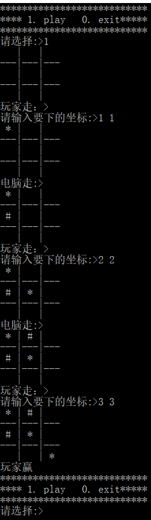

基本流程
- 创建一个用户交互菜单；
- 创建一个棋盘并初始化；
- 打印一个棋盘；
- 玩家落子（玩家通过输入行列坐标落子）；
- 判定胜负关系；
- 电脑落子（电脑采用随机落子的方式落子）；
- 判定胜负关系；
- 游戏结束。
test.c
#define _CRT_SECURE_NO_WARNINGS 1
//测试三子棋游戏
#include "game.h"
//打印菜单：1.开始游戏 0.退出游戏
void menu()
{
printf("***************************\n");
printf("**** 1. play 0. exit*****\n");
printf("***************************\n");
}
// | |
//---|---|---
// | |
//---|---|---
// | |
void test()
{
int input = 0;
srand((unsigned int)time(NULL));//拿时间戳设置一个随机起点，设置一次就可以，不要频繁调用
do
{
menu();
printf("请选择:>");
scanf("%d", &input);
switch (input)
{
case 1:
game();
break;
case 0:
printf("退出游戏\n");
break;
default:
printf("选择错误，请重新选择!\n");
break;
}
} while (input);
}
int main()
{
test();
return 0;
}
game.h
#define ROW 3
#define COL 3
#include <stdio.h>
#include <stdlib.h>
#include <time.h>
//声明
void game();//游戏的整个算法实现
void InitBoard(char board[ROW][COL], int row, int col);//初始化数组
void DisplayBoard(char board[ROW][COL], int row, int col);//打印棋盘和棋子
void PlayerMove(char board[ROW][COL], int row, int col);//玩家移动
void ComputerMove(char board[ROW][COL], int row, int col);//电脑移动
//告诉我们四种游戏的状态
//玩家赢 - '*'
//电脑赢 - '#'
//平局 - 'Q'
//继续 - 'C'
char IsWin(char board[ROW][COL], int row, int col);//检查游戏是否结束
game.c
#define _CRT_SECURE_NO_WARNINGS 1
#include "game.h"
//游戏的整个算法实现
void game()
{
char ret = 0;
//数组-存放走出的棋盘信息
char board[ROW][COL] = { 0 };//全部空格
//初始化棋盘
InitBoard(board, ROW, COL);
//打印棋盘
DisplayBoard(board, ROW, COL);
//下棋
while (1)
{
//玩家下棋
PlayerMove(board, ROW, COL);
DisplayBoard(board, ROW, COL);
//判断玩家是否赢
ret = IsWin(board, ROW, COL);
if (ret != 'C')
{
break;
}
//电脑下棋
ComputerMove(board, ROW, COL);
DisplayBoard(board, ROW, COL);
//判断电脑是否赢
ret = IsWin(board, ROW, COL);
if (ret != 'C')
{
break;
}
}
if (ret == '*')
{
printf("玩家赢\n");
}
else if (ret == '#')
{
printf("电脑赢\n");
}
else
{
printf("平局\n");
}
}
void InitBoard(char board[ROW][COL], int row, int col)
{
int i = 0;
int j = 0;
for (i = 0; i < row; i++)
{
for (j = 0; j < col; j++)
{
board[i][j] = ' ';
}
}
}
//void DisplayBoard(char board[ROW][COL], int row, int col)
//{
// int i = 0;
// for (i = 0; i < row; i++)
// {
// //1. 打印一行的数据
// printf(" %c | %c | %c \n", board[i][0], board[i][1], board[i][2]);
// //2. 打印分割行
// if (i < row - 1)
// printf("---|---|---\n");
// }
//}
// | |
//---|---|---
// | |
//---|---|---
// | |
void DisplayBoard(char board[ROW][COL], int row, int col)
{
int i = 0;
for (i = 0; i < row; i++)
{
int j = 0;
for (j = 0; j < col; j++)
{
//1. 打印一行的数据。 | |
printf(" %c ", board[i][j]);
if (j < col - 1)
printf("|");
}
printf("\n");
//2. 打印分割行。 ---|---|---
if (i < row - 1)
{
for (j = 0; j < col; j++)
{
printf("---");
if (j < col - 1)
printf("|");
}
printf("\n");
}
}
}
void PlayerMove(char board[ROW][COL], int row, int col)
{
int x = 0;
int y = 0;
printf("玩家走：>\n");
while (1)
{
printf("请输入要下的坐标:>");
scanf("%d%d", &x, &y);
//判断x,y坐标的合法性
if (x >= 1 && x <= row && y >= 1 && y <= col)
{
if (board[x - 1][y - 1] == ' ')
{
board[x - 1][y - 1] = '*';
break;
}
else
{
printf("该坐标被占用\n");
}
}
else
{
printf("坐标非法，请重新输入!\n");
}
}
}
void ComputerMove(char board[ROW][COL], int row, int col)
{
int x = 0;
int y = 0;
printf("电脑走:>\n");
while (1)
{
x = rand() % row;
y = rand() % col;
if (board[x][y] == ' ')
{
board[x][y] = '#';
break;
}
}
}
//返回1表示棋盘满了
//返回0，表示棋盘没满
int IsFull(char board[ROW][COL], int row, int col)
{
int i = 0;
int j = 0;
for (i = 0; i < row; i++)
{
for (j = 0; j < col; j++)
{
if (board[i][j] == ' ')
{
return 0;//没满
}
}
}
return 1;//满了
}
char IsWin(char board[ROW][COL], int row, int col)
{
int i = 0;
//横三行
for (i = 0; i < row; i++)
{
if (board[i][0] == board[i][1] && board[i][1] == board[i][2] && board[i][1] != ' ')
{
return board[i][1];
}
}
//竖三列
for (i = 0; i < col; i++)
{
if (board[0][i] == board[1][i] && board[1][i] == board[2][i] && board[1][i] != ' ')
{
return board[1][i];
}
}
//两个对角线
if (board[0][0] == board[1][1] && board[1][1] == board[2][2] && board[1][1] != ' ')
return board[1][1];
if (board[2][0] == board[1][1] && board[1][1] == board[0][2] && board[1][1] != ' ')
return board[1][1];
//判断是否平局
if (1 == IsFull(board, ROW, COL))
{
return 'Q';
}
//继续
return 'C';
}